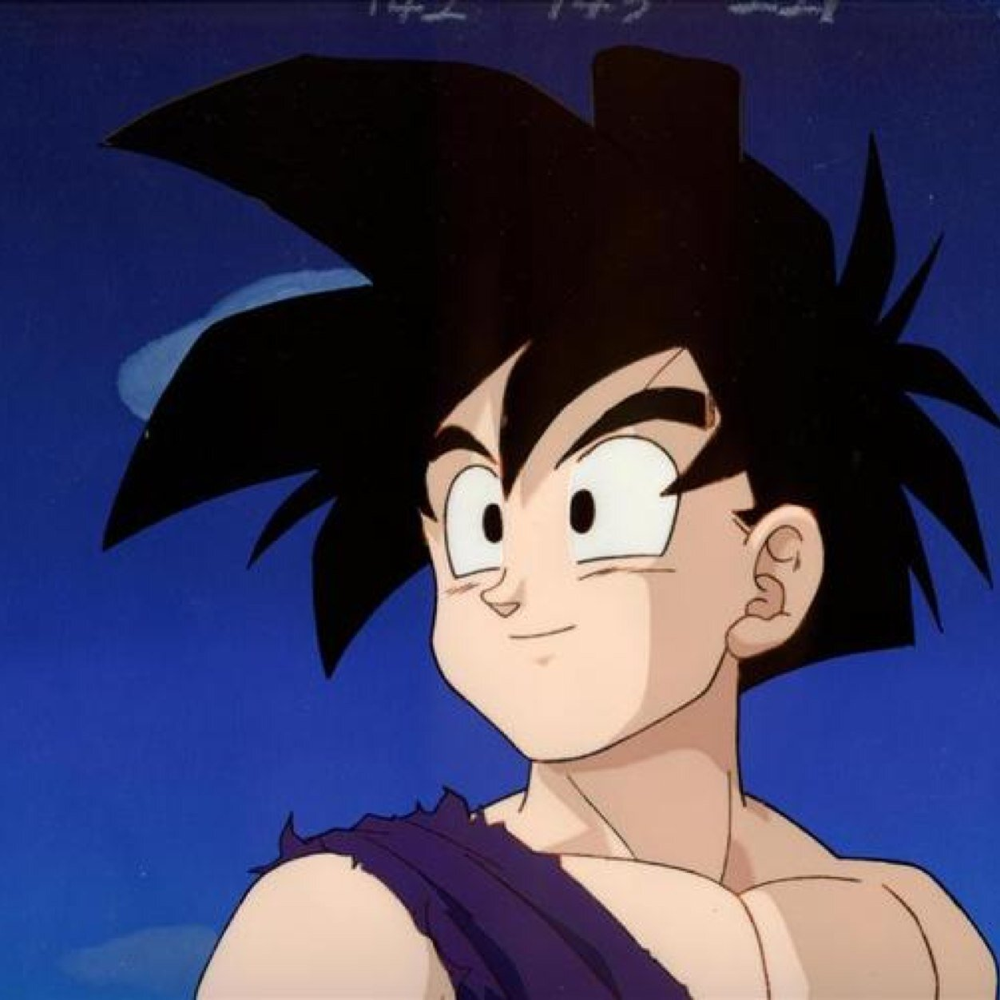

-

- WIKI
Gohan
Son Gohan

First Appearance
Dragon Ball Z Chapter 2 (1988)
Likes
Studying, Eating, His family
Dislikes
Fighting, Killing, Those who hurt his friends and family
Appears in
Dragon Ball Z, Dragon Ball Super, Dragon Ball GT
Biography
Gohan is the son of Goku and is one of the most prominent characters in DBZ. As the son of Goku,
Gohan is immensely powerful as seen in how he was the most powerful character at the end of the Cell and Buu Sagas.
However, Gohan does not love to fight as his father does. Therefore, when his father came back to life,
Gohan's training took a back seat and he became a scholar.
Special Moves
Kamehameha: A blue beam of energy that emenates from Gohan's hands. Gohan learned this
technique from his father Goku and uses it prominently in the series.
Masenko: A yellow beam of energy similar to the Kamehameha. Gohan learned this from Piccolo and
used this technique as a child before learning the Kamehameha.
Soaring Dragon Flight: A powerful uppercut technique. Gohan uses this when he first goes Super Saiyan 2 agaisnt cell.
Transformations
{kind=link}
{kind=link}
{kind=link}
{kind=link}
{kind=link}
{kind=link}
{kind=link}